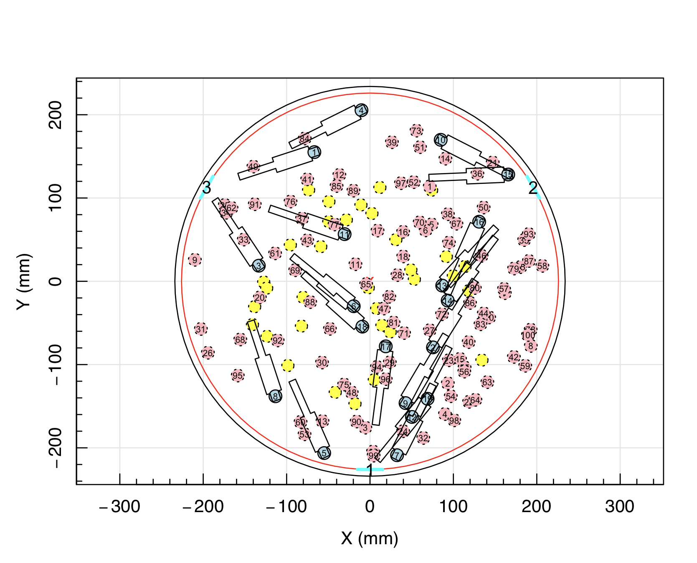
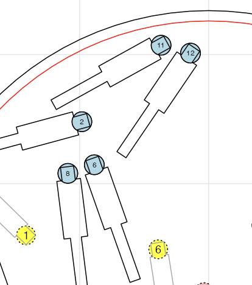
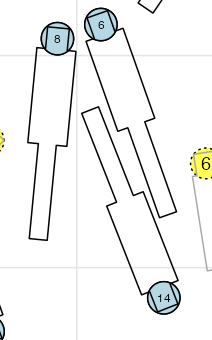

Making a Hector Tile
Below is a detailed set of instructions for making the files we need at the telescope.
At the beginning of a run
- Make a new folder with the format
{run_start_date}_{run_end_date}in theresourcesfolder: e.g.20240306_20240318for an observing run between March 3rd and March 18th in 2024. - Take the tiles from the Hector Tiling code and transfer them into this directory.
- Make a new file called
{run_start_date}_{run_end_date}_galaxy_tiles.csv, e.g.20240306_20240318_galaxy_tiles.csv. This must have the columns namedfield,tile_number,filename,guide_filename,image_source. Each tile you want to run the pipeline on must be included here on a separate row. - Pick a tile to make. Fill out the row in the
{run_start_date}_{run_end_date}_galaxy_tiles.csvfile with the correct information. Theimage_sourcecolumn should be 'DECALS' for all regions other than the G23 field where it should be 'KIDS'. All filenames are relative to the main observing folder, i.e. they should begin withresources/{run_start_date}_{run_end_date}/etc. - Now update the config file, which lives in
config/. TODO: Write up explanation for this file.
Making a tile
- Make sure the
hectorenvironment has been activated. TODO: Add page about the Hector environment. - Make sure the sky masks are available (i.e. plug in your external hard drive!)
- From the main folder, run
snakemake -npr --cores 1 --configfile config/{run_start_date}_{run_end_date}.yaml -- results/{run_start_date}_{run_end_date}/Upload/{tile_file_name}.tar.gz. This will show you the commands whichsnakemakeis about to run. - To actually execute these, run
snakemake --cores 1 --configfile config/{run_start_date}_{run_end_date}.yaml -- results/{run_start_date}_{run_end_date}/Upload/{tile_file_name}.tar.gz(i.e. remove the-nprbit).
All going well, the pipeline will continue and the R plotting window will appear like so:

This can take 30-60 minutes to complete, so probably best to leave it running in the background while you do something else!
When the R code is complete, the remaining pipeline steps usually complete without too much issue. If you run into an error, please check the FAQs.
Important Checks
Checking the magnet layout
Each tile must be checked by eye before it's uploaded to the Data Central cloud. The configuration R code will sometimes result in a tile which is impossible to plug. If this isn't spotted before the plate is configured by the robot at the telescope then it results in a lost half-night of observing. No one wants that!
Make sure that every hexabundle on the plate has a clear path to one of the three exits. In particular, check that there's no cases of a hexabundle tail pointing straight into the side of another magnet, and no cases where a fibre cable would get squeezed in between two other magnets.
Some common issues are shown below:

This shows a tail pointing straight towards another magnet, with nowhere for the fibre cable of magnet 12 to go.

This shows a tail pointing towards a "V" made by two magnets. Again, there's nowhere for the fibre cable of magnet 14 to go.
In both of these cases, you'll need to go back and change the configuration!
Checking the galaxy cutouts
Occasionally, a galaxy which wouldn't be suitable for observing sneaks through our quality control checks and ends up being assigned to a Hexabundle. This might be a galaxy which is actually a nearby star, an imaging artefact or a galaxy with a bright star nearby.
We can catch these cases before the telescope by checking the imaging cutouts. These are saved in results/{start_date}_{end_date}/Cutouts/{tile_name}.
Another important check is to make sure that all foreground targets in the cluster tiles are placed on Spector. If a foreground galaxy with a redshift much lower than the cluster redshift is placed on an AAOmega bundle (A through to H) then you'll need to use the swap_hexabundles.py script to move it to Spector (see Scripts for more info).
Ensuring that galaxies are always repeated on the same spectrographs
You might find that the verify_tile_properties script gives an error when a galaxy we're trying to observe in this tile was previously observed on the opposite spectrograph, i.e. tile B places a galaxy on an AAOmega bundle when tile A previously observed it with a Spector bundle.
When this happens, you have to use the swap_hexabundles.py script to re-arrange things so that repeated galaxies are all on the same spectrographs as before.